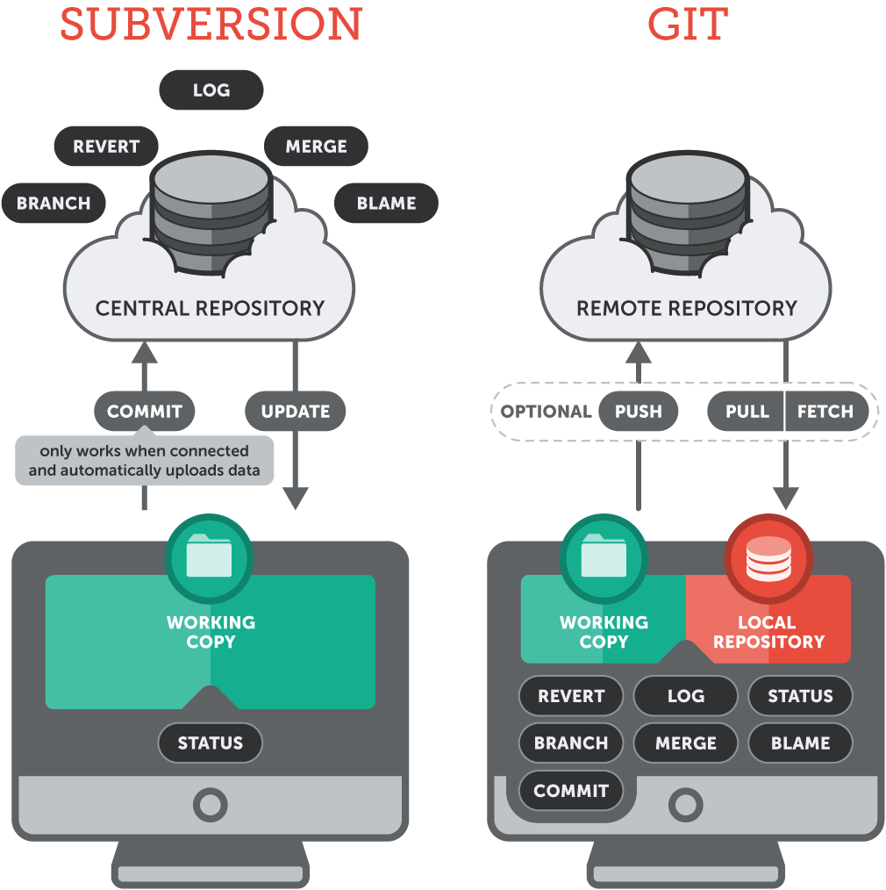

Git como gestor de trabajo colaborativo
GitHub: @juan-castano
Agenda
- ¿Qué son los gestores de versiones?
- Objetos dentro de un VCS (SCM)
- ¿Qué es git-scm?
- Herramientas
- Flujo de trabajo
- Gestión del repositorio
- Liberación de código a producción
¿Qué son los gestores de versiones?
Tipos de controles de versiones

Objetos dentro de un VCS (SCM) - Parte 1
- Repositorio
- Módulo
- Revisión (versión)
- Etiquetado (tagging)
- Línea base (baseline)
- Repositorio
Objetos dentro de un VCS (SCM) - Parte 2
- Ramas
- Publicación
- Conflicto
- Cambio - Lista de cambios
- Integración ó mezcla (merge)
- Actualización (pull o fetch)
- Copia de trabajo (workspace or sandbox)
Etiquetado (tagging)
Las líneas base se generan a través de las etiquetas para tener un mejor control. La línea base general cuando se inicia
un proyecto es el workspace vacío o su primera liberación.